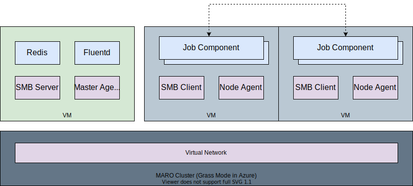

Distributed Orchestration¶
MARO provides easy-to-use CLI commands to provision and manage training clusters on cloud computing service like Azure. These CLI commands can also be used to schedule the training jobs with the specified resource requirements. In MARO, all training job related components are dockerized for easy deployment and resource allocation. It provides a unified abstraction/interface for different orchestration framework (e.g. Grass, Kubernetes).

Process¶
The process mode is part of the MARO CLI, which uses multi-processes to start the training jobs in the localhost environment. To align with Grass and Kubernetes, the process mode also uses Redis for job management. The process mode tries to simulate the operation of the real distributed cluster in localhost so that users can smoothly deploy their code to the distributed cluster. Meanwhile, through the training in the process mode, it is a cheaper way to find bugs that will happens during the real distributed training. It has the following advantages:
Behavior is consistent with the real distributed CLI.
Friendly to operate.
Lightweight, no other dependencies are required.
In the Process mode:
All jobs will be started by multi-processes and managed by MARO Process CLI.
Customized settings support, such as Redis, the number of parallel running jobs, and agents check interval.
For each job’s start/stop, a ticket will be pushed into job queues. The agents monitor those job queues and start/stop job components.
Check Localhost Provisioning to get how to use it.

Grass¶
Grass is a self-designed, development purpose orchestration framework. It can be confidently applied to small/middle size cluster (< 200 nodes). The design goal of Grass is to speed up the distributed algorithm prototype development. It has the following advantages:
Fast deployment in a small cluster.
Fine-grained resource management.
Lightweight, no other dependencies are required.
In the Grass mode:
All VMs will be deployed in the same virtual network for a faster, more stable connection and larger bandwidth. Please note that the maximum number of VMs is limited by the available dedicated IP addresses.
It is a centralized topology, the master node will host Redis service for peer discovering, Fluentd service for log collecting, SMB service for file sharing.
On each VM, the probe (worker) agent is used to track the computing resources and detect abnormal events.
Check Grass Cluster Provisioning on Azure to get how to use it.
{kind=link}
Kubernetes¶
MARO also supports Kubernetes (k8s) as an orchestration option. With this widely used framework, you can easily build up your training cluster with hundreds and thousands of nodes. It has the following advantages:
Higher durability.
Better scalability.
In the Kubernetes mode:
The dockerized job component runs in Kubernetes pod, and each pod only hosts one component.
All Kubernetes pods are registered into the same virtual network using Container Network Interface(CNI).
Check K8S Cluster Provisioning on Azure to get how to use it.